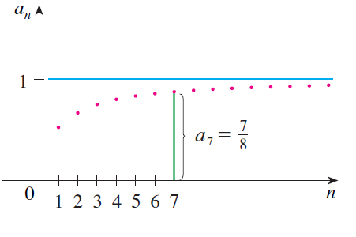
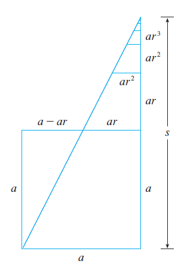
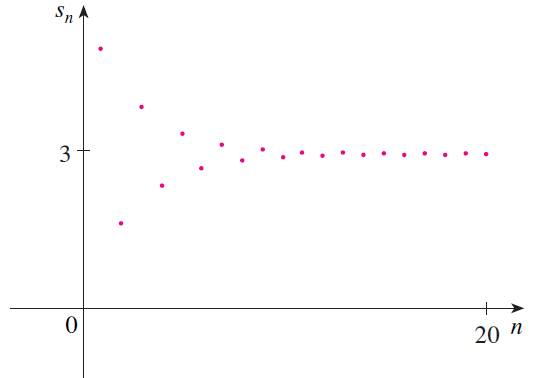

PARTE 4 · AULAS 56–60
Sequências e séries infinitas
Sequências descrevem listas infinitas ordenadas de números. Séries surgem quando somamos os termos dessas sequências. Neste tópico, estudaremos limites de sequências, monotonicidade e limitação, somas parciais, convergência e divergência de séries, séries geométricas, séries telescópicas e a série harmônica. Esses conceitos formam a base para os testes de convergência e para o estudo posterior de séries de potências e séries de Taylor.
1. Sequências
Uma sequência é uma lista ordenada de números definida de acordo com alguma regra. Escrevemos
O número \(a_n\) é denominado termo geral ou n-ésimo termo da sequência.
Formalmente, uma sequência pode ser entendida como uma função cujo domínio é formado pelos números naturais:
A diferença em relação às funções estudadas anteriormente está, portanto, principalmente no domínio: em uma sequência, a variável independente assume valores discretos

2. Formas de definir uma sequência
Uma sequência pode ser definida por uma fórmula explícita para seu termo geral. Por exemplo,
Nesse caso,
Outro exemplo é
que produz a sequência
Algumas sequências também podem ser definidas recursivamente, isto é, um termo é determinado a partir de termos anteriores.
Por exemplo:
Assim,
3. Limite de uma sequência
O principal interesse no estudo de sequências infinitas é compreender o comportamento de \(a_n\) quando \(n\) cresce indefinidamente.
Dizemos que a sequência \(\{a_n\}\) converge para o número \(L\) quando
Isso significa que os termos \(a_n\) podem ser tornados arbitrariamente próximos de \(L\), desde que \(n\) seja suficientemente grande.
A sequência \(\{a_n\}\) converge para \(L\) se, para todo \(\varepsilon>0\), existir um número natural \(N\) tal que
Se não existir um número real \(L\) satisfazendo essa condição, a sequência é denominada divergente.
4. Exemplo: cálculo do limite de uma sequência
Considere
Para analisar o comportamento quando \(n\to\infty\), dividimos numerador e denominador por \(n\):
Como
obtemos
Portanto, a sequência converge para \(2\).
5. Sequências monótonas
Uma sequência é crescente quando
para todo \(n\) considerado.
Analogamente, ela é decrescente quando
Sequências crescentes ou decrescentes são chamadas sequências monótonas.
Considere
Os primeiros termos são
Os termos aumentam e se aproximam de \(1\). Portanto, essa sequência é crescente e
6. Sequências limitadas
Uma sequência \(\{a_n\}\) é limitada superiormente quando existe um número \(M\) tal que
para todo \(n\).
Ela é limitada inferiormente quando existe um número \(m\) tal que
Se for limitada superior e inferiormente, dizemos simplesmente que a sequência é limitada.
Toda sequência convergente é limitada.
Além disso, uma sequência monótona e limitada é convergente. Esse resultado é particularmente útil quando não é simples determinar diretamente uma fórmula para o limite.
7. De sequências para séries
Até aqui estudamos o comportamento dos termos \(a_n\). Agora surge uma pergunta diferente:
o que significa somar infinitos termos de uma sequência?
A expressão
é denominada uma série infinita e é representada por
\(\{a_n\}\) representa uma sequência: estamos interessados no comportamento dos próprios termos.
\(\displaystyle\sum a_n\) representa uma série: estamos interessados no comportamento da soma dos termos.
8. Somas parciais
Não podemos interpretar uma série infinita simplesmente como uma soma realizada de uma única vez. Para atribuir significado matemático a essa expressão, construímos uma nova sequência: a sequência das somas parciais.
e, em geral,
Portanto, associamos à série
a sequência
É o comportamento dessa sequência de somas parciais que determina se a série converge ou diverge.
9. Convergência de uma série infinita
A série
é convergente se a sequência de suas somas parciais \(\{s_N\}\) possuir limite finito.
Nesse caso, escrevemos
Assim,
Se esse limite não existir como um número real finito, a série é divergente.
10. Um primeiro exemplo
Considere a série
Suas primeiras somas parciais são
À medida que acrescentamos novos termos, as somas parciais aproximam-se de \(1\):
Portanto,
11. Série geométrica
Uma das séries mais importantes é a série geométrica:
em que \(a\neq0\) é o primeiro termo e \(r\) é a razão comum.
Em notação de somatório,
Cada termo é obtido multiplicando o termo anterior por \(r\):
12. Soma parcial de uma série geométrica
Considere a soma dos primeiros \(N\) termos:
Multiplicando por \(r\),
Subtraindo as duas expressões,
Logo, para \(r\neq1\),
e portanto
13. Quando a série geométrica converge?
Para obter a soma infinita, calculamos
Se
então
Consequentemente,
desde que
Se
a série geométrica diverge.

14. Exemplo: identificando uma série geométrica
Considere
O primeiro termo é
e a razão comum é
Como
a série converge. Sua soma é
15. Série geométrica com razão negativa
A razão de uma série geométrica não precisa ser positiva. Considere
Nesse caso,
Como
a série converge e
Nesse exemplo, as somas parciais oscilam em torno de \(3\), mas a amplitude dessas oscilações diminui progressivamente.
16. Séries telescópicas
Algumas séries podem ser estudadas diretamente por meio de suas somas parciais, mesmo quando não são geométricas.
Considere
Usando frações parciais,
Logo, a soma parcial é
Escrevendo os primeiros termos,
Os termos intermediários se cancelam:
Portanto,
Assim,
17. Série harmônica
A série harmônica é
Observe que
Entretanto, isso não é suficiente para garantir a convergência da série.
Para demonstrar a divergência, podemos agrupar os termos:
No primeiro grupo entre parênteses,
No grupo seguinte,
O mesmo argumento pode ser repetido indefinidamente. Cada novo bloco contribui com uma quantidade maior que ou igual a aproximadamente \(1/2\).
Em particular, para determinadas somas parciais,
Como
a sequência de somas parciais não possui limite finito. Portanto,

18. Condição necessária para a convergência
Se a série
converge, então necessariamente
A justificativa decorre diretamente das somas parciais. Como
temos
Se a série converge para \(s\), então
Logo,
19. Cuidado: a recíproca é falsa
A condição
é necessária para a convergência de \(\sum a_n\), mas não é suficiente.
A série harmônica fornece o contraexemplo fundamental:
mas
diverge.
Portanto, a afirmação
é falsa.
20. Teste da divergência
A condição necessária anterior fornece um teste simples e extremamente útil.
Se
não existir, ou se
então
Considere
O termo geral satisfaz
Como
a série diverge pelo teste da divergência.
Se encontrarmos
o teste da divergência é inconclusivo. Nesse caso, serão necessários outros testes de convergência.
21. Propriedades algébricas das séries convergentes
Suponha que
sejam séries convergentes e que \(c\) seja uma constante. Então:
Essas propriedades decorrem das propriedades algébricas dos limites aplicadas às sequências de somas parciais.
22. Um número finito de termos não altera a convergência
Adicionar ou retirar uma quantidade finita de termos de uma série não altera seu caráter de convergência ou divergência.
Por exemplo,
A parcela
é apenas um número real finito. Portanto,
e
possuem o mesmo comportamento quanto à convergência ou divergência.
23. Sequência × série: não confunda
Essa distinção é fundamental para todo o estudo posterior.
Sequência:
Pergunta principal: para onde vai \(a_n\) quando \(n\to\infty\)?
Série:
Pergunta principal: para onde vão as somas parciais?
Em outras palavras, a convergência de uma série é, na realidade, um problema de convergência de uma sequência: a sequência \(\{s_N\}\) das somas parciais.
24. Como analisar os problemas deste tópico
Ao trabalhar com sequências e séries, é importante identificar primeiro qual objeto matemático está sendo estudado.
Para uma sequência \(\{a_n\}\):
1. Identifique o termo geral \(a_n\).
2. Analise \(\displaystyle\lim_{n\to\infty}a_n\).
3. Quando necessário, investigue monotonicidade e limitação.
Para uma série \(\sum a_n\):
1. Identifique o termo geral \(a_n\).
2. Verifique imediatamente o limite de \(a_n\).
3. Se \(\lim a_n\neq0\), a série diverge.
4. Se \(\lim a_n=0\), não conclua convergência.
5. Verifique se a série possui uma estrutura conhecida, como uma série geométrica ou telescópica.
6. Quando possível, determine a expressão das somas parciais e calcule seu limite.
25. Erros conceituais comuns
- Confundir a sequência \(\{a_n\}\) com a série \(\sum a_n\).
- Concluir que uma série converge apenas porque \(a_n\to0\).
- Aplicar a fórmula da série geométrica sem verificar se \(|r|<1\).
- Confundir o termo geral \(a_n\) com a soma parcial \(s_n\).
- Calcular apenas alguns valores numéricos de \(s_n\) e considerar isso uma demonstração de convergência.
- Esquecer que uma série convergente precisa ter uma sequência de somas parciais com limite finito.
26. Síntese
Sequência:
Convergência de uma sequência:
Soma parcial:
Série convergente:
Série geométrica:
Condição necessária:
Mas a recíproca é falsa:
Use o GeoGebra para representar os pontos \((n,a_n)\) de uma sequência e os pontos \((N,s_N)\) da sequência de somas parciais. A visualização ajuda a distinguir o comportamento dos termos da série do comportamento de suas somas parciais.